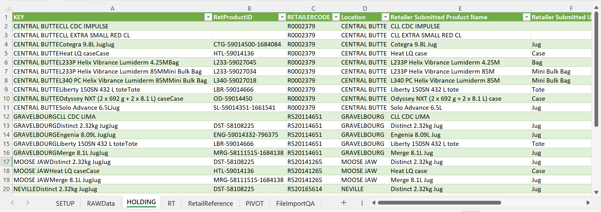

SUMMER 2024 WORK TERM REPORT
Thomas Martin
Data Collection Co-op Student
June 2024 - August 2024
INTRODUCTION
This work term report is an in-depth overview of my experience as a co-op student during my work term at the University of Guelph in the Office of the President, where I served as a Data Collection Co-op Student from June 2024 to August 2024.
OUR TIME: UNIVERSITY OF GUELPH STRATEGIC PLAN 2022-2027

The University of Guelph launched its strategic plan in 2022 to better align the institution with its mission, vision, and values. It serves as a foundation for future decisions, a basis for other strategic documents (such as the strategic research plan), and drives meaningful change within the university. It is structured around five key objectives and one key enabler:
- Deepening our global impact
- Transformation through Indigenization and Equity, Diversity, and Inclusion (IEDI)
- Advancing our student experience
- Building a sustainable tomorrow
- Supporting staff and faculty success
- Leveraging financial and digital capacity
Each of these objectives was supported by a set of key performance indicators (KPIs) that helped track the university's progress. In my role as a data collection co-op student, I worked to refine and enhance these KPIs, collaborating with various departments to gather, analyze, and report data that measures the university's advancement toward its goals.
WORK TERM GOALS
Throughout this work term, I had three main learning goals. These goals were to enhance my inquiry and analysis skills when developing new KPIs, to improve my business and operational communication skills within a business organization, and to improve my knowledge and skills in data collection and analysis skills where applicable.
CRITICAL & CREATIVE THINKING - INQUIRY & ANALYSIS
My first goal for this work term was to enhance my inquiry and analysis skills when developing new KPIs. I wanted to identify gaps within the strategic plan's existing KPIs, perform an environmental scan of Ontario/Canadian universities to identify common KPIs, and develop a strategic plan proposal/report.
Building on the strategic plan's goals and objectives, I identified gaps and areas for improvement within its existing KPIs. Through an environmental scan of Ontario/Canadian universities, I compared their mission, vision, and values with those of the University of Guelph. This allowed me to assess where our current KPIs were effective and to propose new KPIs for areas that needed improvement.

After developing a new set of KPIs, significant time and effort was spent determining the most effective way to present each KPI. I focused on clearly articulating the value and role of each KPI within the context of the strategic plan, ensuring they accurately reflected the plan's goals and objectives.
Although a formal strategic plan proposal/report was not completed due to timeline adjustments and delays in data validation, most of the necessary components are in place for a proposal/report to be developed in the future.
COMMUNICATING - INTEGRATIVE COMMUNICATION
My second goal for this work term was to improve my business and operational communication skills within an organization. I wanted to communicate effectively with other departments within the university to facilitate data collection for the strategic plan proposal/report, and lay the groundwork for annual/regular reporting.
There were many moving parts and diverse data sources across the university, which made identifying the origin of each KPI challenging. Some KPIs had clear sources, such as dashboards or data briefs, while others required direct data requests from specific departments within the university.
A data request document was developed to track all data requests and identify the departments or individuals responsible. This process ensured that data was collected from the correct sources and helped establish reliable data sources for future annual or regular reporting.

LITERACY - TECHNOLOGICAL LITERACY
My third goal for this work term was to improve my problem-solving ability by taking on an independent project to help automate and streamline the file import QA process. This goal carried over from my first work term at Kenna. The aim for this project was to implement a macro-enabled Excel template that would greatly reduce the amount of manual set-up/processes required for file import QA.
File import QA used to require that the user run several different queries outside of Excel and copy over their results. I worked on embedding these queries natively in Excel. I also implemented a macro which allowed the user to refresh each query under the assumption that a parameter was contained in a certain cell.
Also, file import QA used to require the user to manually create a pivot table based on raw data that they imported. Each pivot table used to be different, given inconsistent formatting across retailers (even within retailers on a file-to-file basis). Implementing a solution for this was relatively simple for retailers with a single location -- I implemented a macro that created a standardized pivot table under the assumption that the user changes certain column headers to match the column mapping in our database. This was much more difficult for retailers with multiple locations, which required a "Location Name" field within the pivot table. Retailer-submitted location data tended to be wildly inconsistent -- I created a query called "RetailReference" which provided location mapping for standardizing location data. Once this was created, a similar macro was implemented to create a standardized pivot table.
Finally, file import QA used to require that the user manually enter formulas due to variable pivot table formatting. By implementing a standardized pivot table, I was able to automate these formulas.
By nature of the template's implementation, I wasn't able to do rigourous testing. The template was designed in such a manner that raw data conformed to the template, rather than the template conforming to raw data. The template's requirements for the user ended up being quite rigid by design, reducing the scope of what I was able to test effectively.
JOB DESCRIPTION & RESPONSIBILITIES
As a Data Collection & Integration Assistant at Kenna, I was responsible for a wide variety of tasks and challenges which often varied on a day-to-day basis.
In the summer months, most of my time was spent doing data mapping, where I mapped product/grower data to our database (which we referred to as "linking"). This required me to think quite heuristically -- it required great attention to detail and the ability to handle missing, duplicate, or contradictory data. I also performed data analysis in the form of quantity/price thresholds, where I examined certain quantities/prices in relation to purchase/price history using SQL. These tasks were consistent throughout both of my work terms at Kenna -- overall, I performed over 5000 data links and evaluated over 2000 data thresholds with 100% accuracy (within the sample size that was tested.)
A subset of these data links and data thresholds required that I make direct communication with retailers/growers via phone/email to retrieve missing data or follow-up on contradictory data. On occasion, my communication with retailers expanded to designated calling campaigns, where I was responsible for gathering information from retailers or relaying information to them.
During the fall months, the majority of my effort was spent doing POG reconciliation -- the process in which every transaction from the 2023 growing season was validated. This involved a lot of investigating and resolving discrepancies, as well as regular communication with retailers to discuss validation and to resolve discrepancies.
RELATION TO ACADEMIC STUDIES
Throughout both of my work terms at Kenna, I have acquired a lot of transferable skills that can be applied to my future studies. I was given the opportunity to take on an independent project, which has certainly improved my skills in Excel and SQL by a wide margin. My attention to detail as well as my ability to think critically and heuristically has improved dramatically. My collaboration and communication skills are much more refined, and I am much more comfortable with the dynamics/workflow of a professional, collaborative environment.
CONCLUSION
My work terms as a Data Collection & Integration Assistant at Kenna were a great experience. I came away from them with newfound/improved skills in Excel and SQL, as well as collaboration, time management, and communication. These skills and experiences will be greatly valuable to me as I move forward in my journey in computer science -- both in school and in the workforce.
ACKNOWLEDGEMENTS
I would like to thank Kenna for giving me the opportunity to spend the last 8 months with them. I would like to thank the Data Collection team -- with special thanks to Shajeah Janjua and Jennifer Charter for providing me with the resources to be successful, their continued support, and their willingness and enthusiasm to answer all of my many questions throughout both of my work terms.